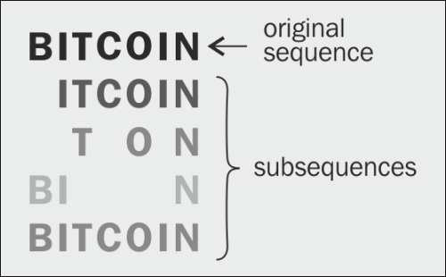
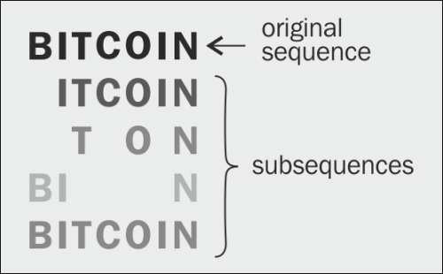

LCS Problem
The longest common subsequence (LCS) problem is the problem of finding the longest subsequence common to all sequences in a set of sequences (often just two sequences). It differs from the longest common substring problem: unlike substrings, subsequences are not required to occupy consecutive positions within the original sequences. The longest common subsequence problem is a classic computer science problem, the basis of data comparison programs such as the diff utility, and has applications in computational linguistics and bioinformatics. (Wikipedia, 2020)

 
